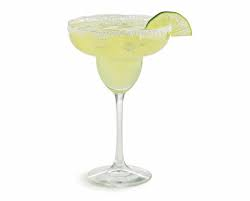

Margarita

Tequila loves rejoice! This classic margarita is easy to make yourself and rivals the restaurants.
This classic cocktail is great on a hot summer day. The combination of salt and chilled tequila will make your taste
buds swim as you watch the sunset.
Ingredients
- 1 1/2 ounces of silver tequila
- 1 ounce orange liqueur
- 3/4 ounce freshly squeeze lime juice
- Agave nectar to taste (optional)
- Ice
- Kosher salt to rim the glass (optional)
- Lime wedge to garnish (optional)